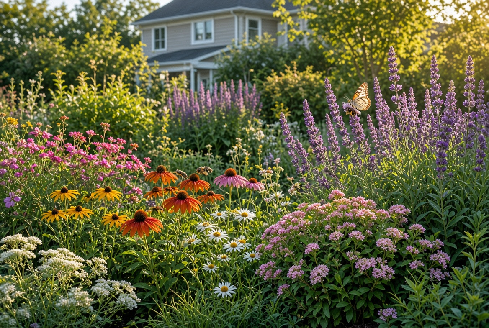
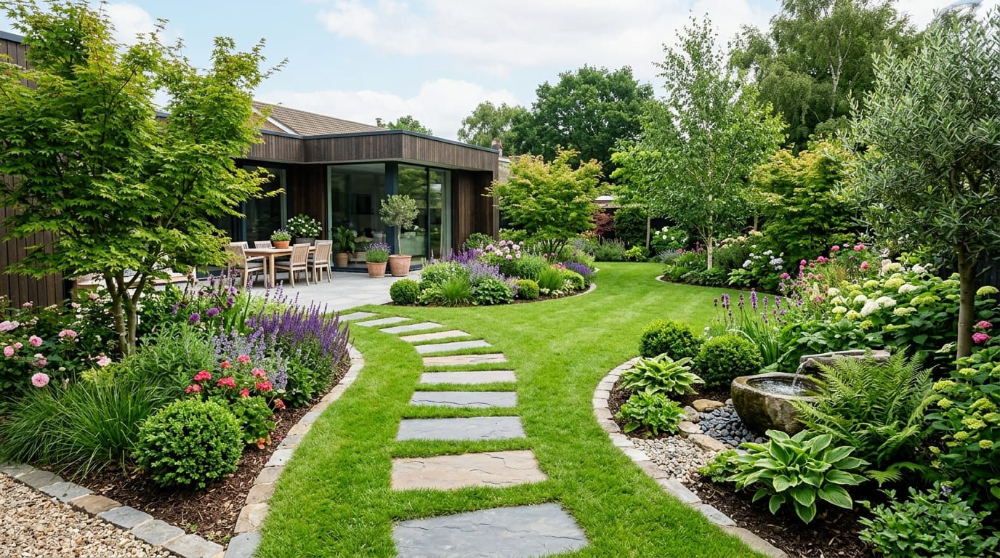

25 técnicas para cuidar mejor tu jardín
Descubre prácticas sencillas para mantener tus plantas saludables y mejorar el jardín durante todo el año.
Leer artículo →Consejos prácticos, ideas y guías para cuidar tu jardín, cultivar plantas y crear espacios verdes llenos de vida.

Descubre prácticas sencillas para mantener tus plantas saludables y mejorar el jardín durante todo el año.
Leer artículo →
Conoce errores habituales de riego, luz, sustrato y mantenimiento, y aprende cómo evitarlos.
Leer artículo →
Una guía para planificar el espacio, elegir plantas y comenzar un jardín atractivo y funcional.
Leer artículo →